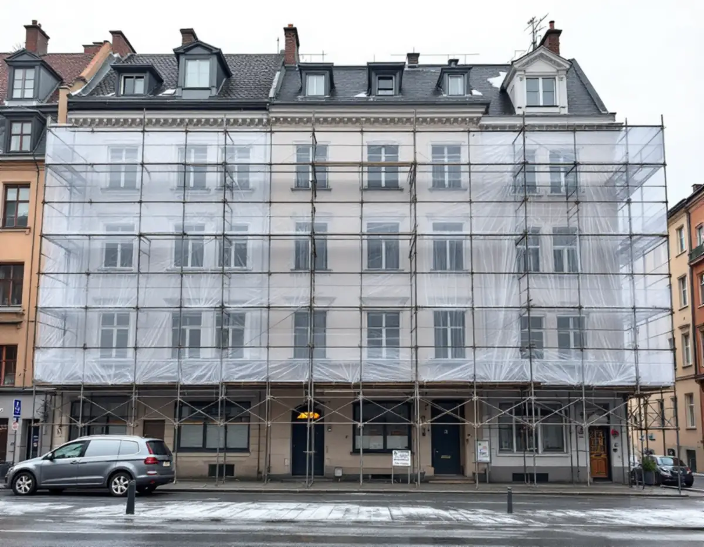
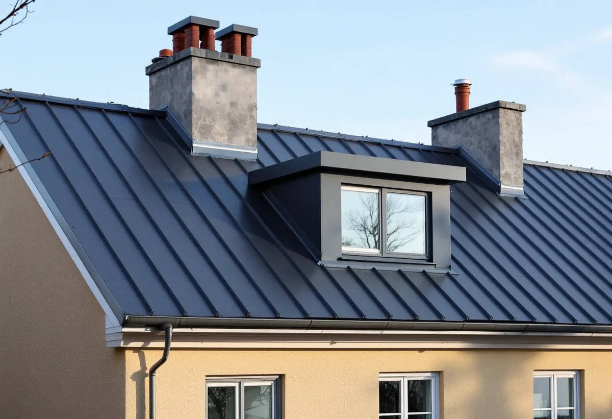
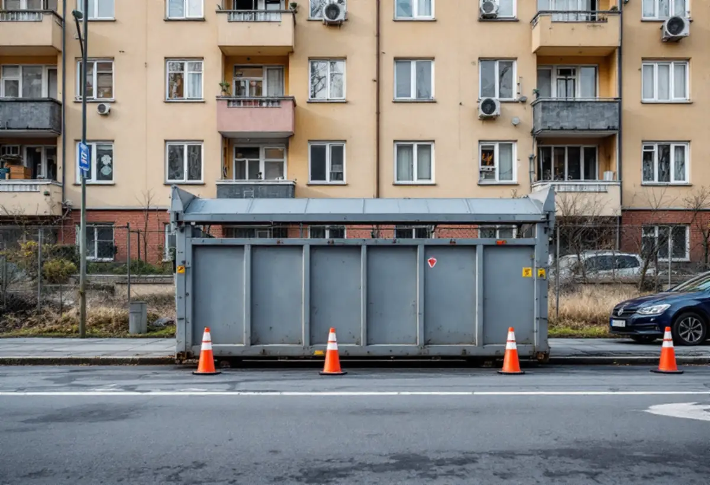

Platsbesök
Gratis besök på vinden och taket tillsammans med föreningen.
Att byta taket på ett hus på Södermalm börjar ofta på trottoaren. Ställningen, containern och materialet behöver plats på gatan, och det kräver tillstånd. Geal Entreprenad AB byter tak på flerbostadshus och tar fram underlaget till föreningen eller hyresvärden innan arbetet börjar.

Stockholms stad skriver att den som behöver använda offentlig plats för byggverksamhet ska söka polistillstånd, och att tillståndet ska vara utfärdat innan platsen tas i bruk. Det gäller bland annat byggställningar, containrar, arbetsbodar, mobilkranar och byggsäckar. På en gata med hus i gatuliv, som i stora delar av Södermalm, står ställningen ofta på trottoaren.
Staden ställer krav på hur ställningen står. Minst 1,6 meter ska vara fritt under den, eller minst 2 meter av gångbanan ska finnas kvar för gående. Behövs plats för ställningsmaterial vid upp- och nedmontering ska den ingå i tillståndet. Vi söker tillståndet i god tid och planerar etableringen så att porten och gångbanan går att använda.

Utöver polistillståndet skriver staden att bygglov behövs för att uppföra en byggbod, ställa upp en container, anordna upplag för byggmaterial och sätta upp byggplank eller byggskylt. Ett glest byggstängsel kräver däremot inget bygglov.
När det gamla taket rivs ska materialet ner till gatan, och då behövs både container och tillstånd. Vi lägger in tillstånden i tidplanen innan föreningen bestämmer startdatum, så att arbetet inte står still i väntan på ett papper.
Stadens områdesfakta för 2025 räknar på Södermalm drygt 43 500 bostadsrätter i flerbostadshus, cirka 21 700 lägenheter hos privata hyresvärdar och drygt 8 600 hos allmännyttan. Taket på ett sådant hus är husägarens sak. Det är föreningen eller hyresvärden som beställer ett takbyte, och för de boende är det framför allt en fråga om information och tillträde till vinden.
Boverket beskriver att byggherren, till exempel en bostadsrättsförening, har det yttersta ansvaret för att lov och startbesked finns och att kontrollplanen följs. Vi tar fram underlag till styrelsen eller fastighetsägaren om material, etablering och tider.
Stockholms stad räknar byte av kulör eller material på tak som en fasadändring. På ett flerbostadshus krävs bygglov när ändringen görs på ett tak som vetter mot allmän plats. Ligger huset inom ett riksintresse, ett särskilt värdefullt område eller är det blå- eller grönklassat krävs bygglov även för ändringar som annars hade varit lovfria.
Stadens redovisning av riksintressena beskriver den klassiska stenstadens tak som sluttande, oftast plåttäckta och med en lutning upp till 45 grader från fasaden, vilket ger ett karaktäristiskt taklandskap. Byts ett plåttak mot ett nytt plåttak i samma utförande är det underhåll. Vill föreningen byta material eller kulör tar vi fram handlingar för bygglovet.
Arbetsmiljöverket skriver att man ska räkna med att det finns asbest i hus byggda fram till 1982, bland annat i asbestcementskivor, eternit, för tak och väggar, och i fix och fog. Det gäller inte bara huvudtaket utan också gårdshus, tillbyggnader och detaljer som byggts eller lagats under de åren.
Byggherren ska enligt Arbetsmiljöverket se till att materialen undersöks innan rivning. Hittas asbest i det som ska rivas planeras saneringen av ett företag med tillstånd innan takbytet börjar.

Gratis besök på vinden och taket tillsammans med föreningen.
Material, utförande och om bygglov behövs.
Polistillstånd för ställning och etablering på gatan.
Ställning, väderskydd och container.
Gammalt tak rivs, underlag ses över och nytt tak läggs.
Plåtdetaljer, besiktning och nedmontering.
Skatteverket ger rotavdrag i en bostadsrätt bara för arbete inne i bostaden som du ansvarar för enligt stadgarna. Arbete på gemensamma delar som tak och fasader ger inget rotavdrag, varken för föreningen eller för de boende.
Ett takbyte på ett flerbostadshus betalas därför av föreningen eller hyresvärden utan avdrag, och kostnadsförslaget ställs till den som äger huset.
Takets yta och lutning, hur mycket underlag som behöver bytas, plåtdetaljer kring kupor och skorstenar, ställningens storlek och tiden på gatan samt om bygglov behövs. En överblick finns i vad kostar ett takbyte. Efter ett gratis platsbesök får föreningen ett skriftligt kostnadsförslag.
Byte av tegel-, betong- och plåttak.
Takbyte →Takbyte, takbesiktning och plåtarbeten.
Takläggare på Södermalm →Stenstad, storgårdskvarter och bergen.
Takrenovering på Södermalm →Vattenskador, ansvar och husens olika åldrar.
Badrumsrenovering på Södermalm →Inreda vinden till bostäder.
Byggföretag på Södermalm →Putsen mot gatan.
Fasadmålning på Södermalm →Kalkputs, kalkfärg och plåt på lister.
Fasadrenovering på Södermalm →Föreningar, gatufasad och gårdsfasad.
Fönsterbyte på Södermalm →Föreningens fönster, besiktigade före beslut.
Fönsterrenovering på Södermalm →Renovera, riva och sortera golvet.
Golvläggare på Södermalm →Slipa golven i den nyköpta lägenheten.
Golvslipning på Södermalm →Kokvrå, gasspis och kulturvärden i lägenheten.
Köksrenovering på Södermalm →Äldre färglager, bättring och provytor.
Målare på Södermalm →Takkupor, vindar och äldre tak.
Plåtslagare på Södermalm →Väggar, dörrar och förvaring i lägenhet.
Snickare på Södermalm →Ny tapet och gamla tapetlager.
Tapetsering på Södermalm →Lägenheten i takt med stambytet.
Totalrenovering på Södermalm →